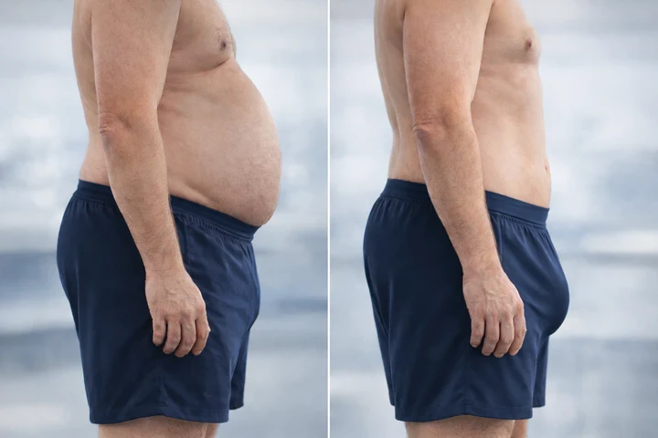
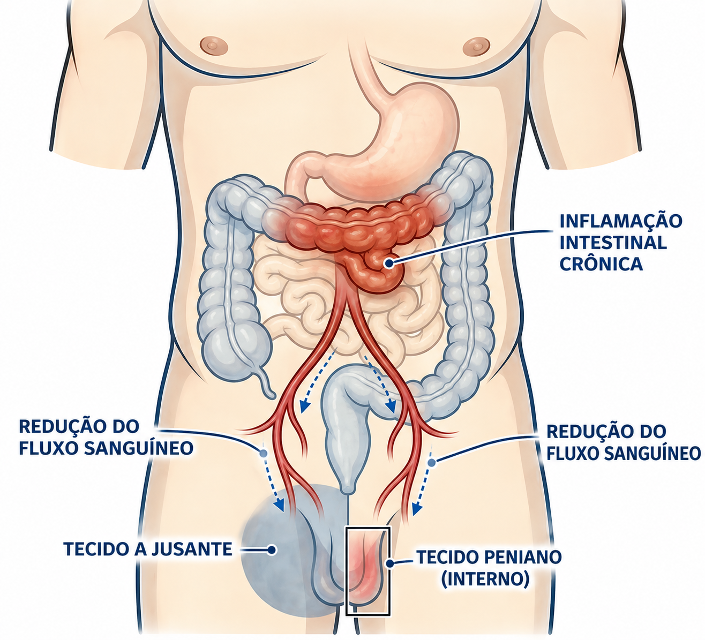
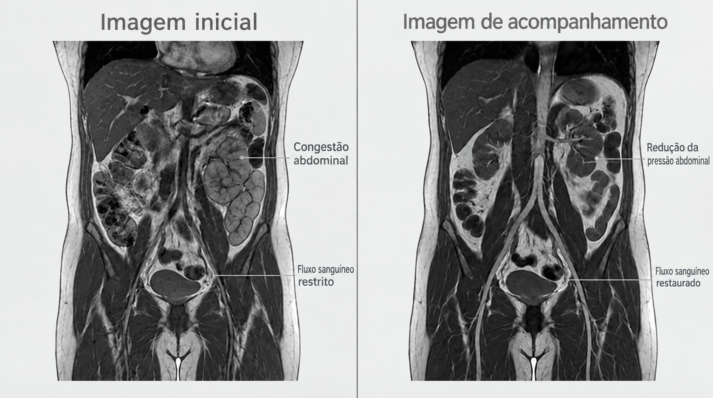
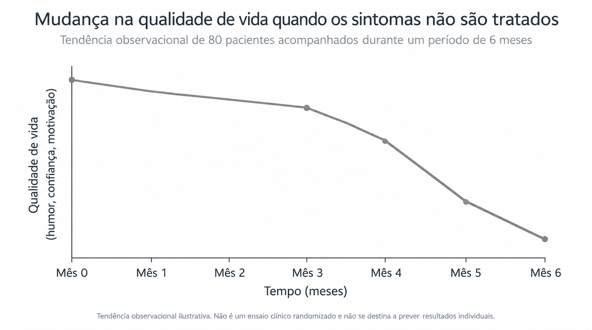
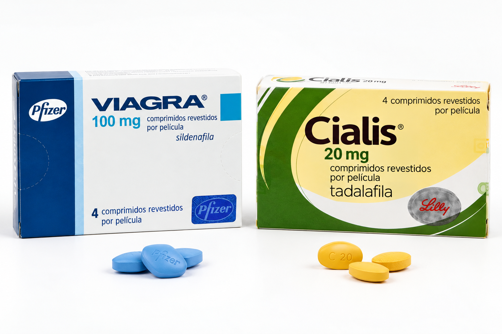
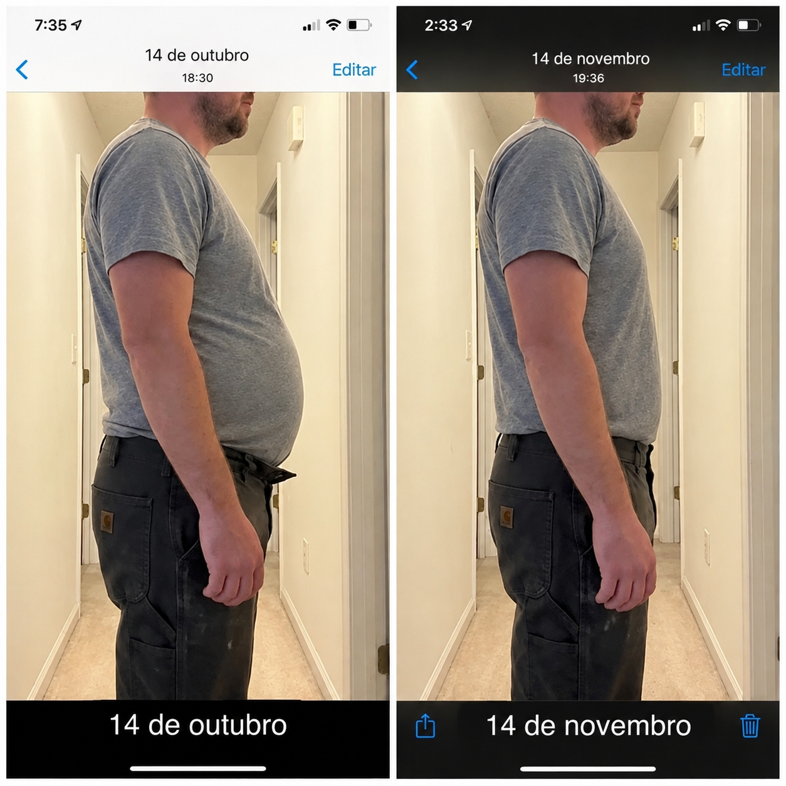
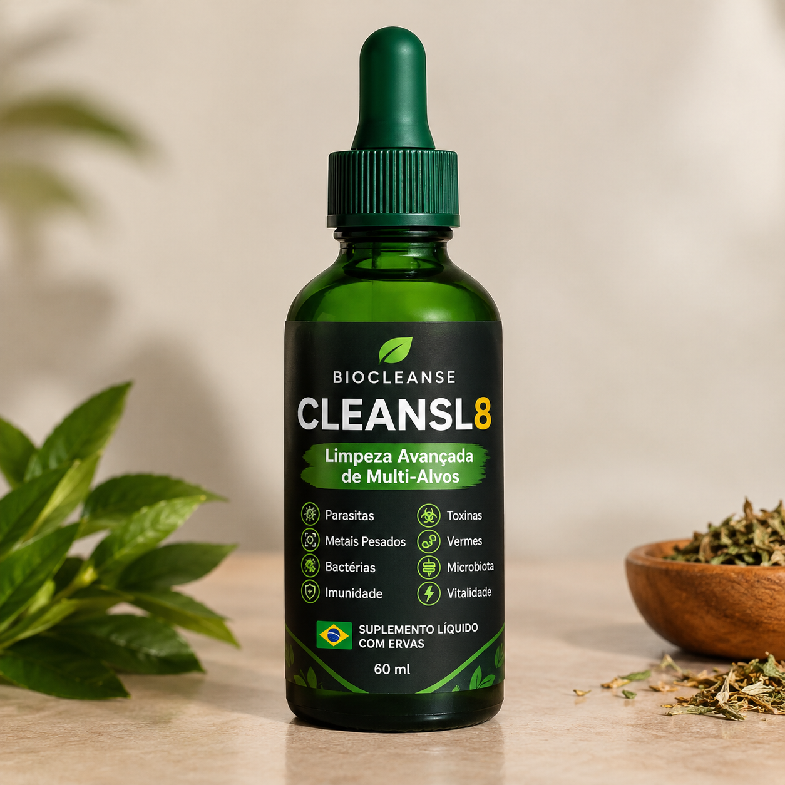

Estudo revela a relação entre a saúde intestinal e a circulação sanguínea pélvica: a nova alternativa natural para a recuperação do volume peniano masculino.

Um suplemento para a saúde intestinal, desenvolvido para eliminar parasitas intestinais, está viralizando depois que homens relataram ganhos inesperados de tamanho de até 7 em apenas 7 dias.
- Homens estão relatando aumentos visíveis de tamanho de até 7 cm após tomar uma fórmula para a saúde intestinal contendo berberina e alginato de sódio.
- A fórmula atua eliminando parasitas intestinais, reduzindo o inchaço abdominal e restaurando o fluxo sanguíneo para a região da virilha.
- A maioria dos homens percebe mudanças visíveis em 7 a 10 dias, à medida que a inflamação diminui e o comprimento "oculto" é revelado.
Geralmente consigo perceber antes mesmo de um homem dizer uma palavra. Pela maneira como ele se senta. Pelo modo como evita contato visual. Ele está prestes a me contar algo que nunca contou a ninguém. Às vezes, nem mesmo à esposa.
Após 26 anos como urologista, já ouvi isso milhares de vezes: "Acho que estou diminuindo."
Esses homens não são fracos. São executivos, atletas, pais. Mas, quando finalmente dizem isso em voz alta, há vergonha na voz deles. Eles têm se observado no espelho. Comparando com a aparência de antes. Perguntando-se se a esposa percebeu.
A maioria culpa a idade. Alguns culpam o ganho de peso. Outros acham que fizeram algum mal a si mesmos. Mas, depois de anos observando esse padrão, percebi que a maioria está olhando para o problema errado.
O caso que deu início a tudo
Muitos homens têm dificuldade para falar sobre esses sintomas, até mesmo com o médico.
Cristiano tinha 48 anos. Era bem-sucedido. Casado havia 20 anos. Mas, quando se sentou à minha frente, parecia derrotado.
Ele era meu paciente havia dois anos. As mesmas queixas em todas as consultas: ereções fracas, redução visível do tamanho, ausência de ereções matinais. Tentamos os protocolos convencionais. Exames de testosterona, avaliações cardiovasculares, medicamentos para disfunção erétil. Ele melhorava por algumas semanas e depois voltava a piorar.
Mas aquela consulta foi diferente. Ele não queria falar sobre medicamentos. Queria me contar algo.
"Minha esposa e eu não temos intimidade há três meses. Continuo inventando desculpas. Não posso deixar que ela me veja assim. Olho para baixo e já nem me reconheço." — Cristiano, 48 anos
Então, quase como um comentário casual, ele mencionou outra coisa: seu intestino estava péssimo. Sentia-se inchado o tempo todo. Calças que antes serviam estavam desconfortáveis. E tudo começou mais ou menos na mesma época em que o restante dos problemas piorou.
Foi então que algo fez sentido.
Comecei a perguntar aos meus outros pacientes, especialmente àqueles com sintomas mais graves, sobre a saúde intestinal. A correlação era impossível de ignorar.
A pesquisa

Como a inflamação intestinal restringe o fluxo sanguíneo para o tecido peniano.
Naquela noite, fiz o que deveria ter feito anos antes. Pesquisei na literatura médica possíveis conexões entre a saúde intestinal e a função erétil.
O que encontrei me deixou irritado comigo mesmo por não ter percebido isso antes.
Um estudo de 2023 publicado no Journal of Urology constatou que a inflamação intestinal crônica reduziu a disponibilidade de óxido nítrico em até 62%. O óxido nítrico é a molécula que controla o fluxo sanguíneo para a região da virilha. Reduza isso em mais da metade e não importa quanto Viagra você tome: estará lutando com uma mão amarrada nas costas.
Outro estudo publicado no International Journal of Impotence Research constatou que homens com parasitas intestinais não diagnosticados apresentavam taxas de disfunção erétil 6,8 vezes maiores. Quando a infecção foi tratada, a função foi restaurada em 78% dos pacientes.
Isso não era ciência marginal. Eram pesquisas revisadas por especialistas que a maioria dos urologistas, inclusive eu, havia deixado passar porque não fomos treinados para olhar para o intestino.
Como isso realmente funciona

O sistema vascular conecta diretamente a saúde intestinal à função erétil. Ilustração médica.
Vou explicar de maneira simples, porque entender o mecanismo é importante.
Seu intestino e sua saúde sexual estão conectados pelo sistema vascular. A mesma rede de vasos sanguíneos. Quando parasitas se instalam no intestino, desencadeiam uma reação em cadeia que afeta diretamente o que acontece abaixo da cintura.
Etapa 1: Os parasitas causam inflamação crônica. Os parasitas intestinais se alimentam do revestimento do intestino e liberam toxinas que provocam uma resposta inflamatória constante. Essa inflamação não fica restrita ao local. Ela se espalha pelo organismo através da corrente sanguínea.
Etapa 2: A inflamação causa inchaço que esconde o tamanho real. A resposta inflamatória provoca inchaço abdominal, às vezes significativo. Isso pode ocultar fisicamente a base do pênis. Ao olhar para baixo, ele parece ter alguns centímetros a menos. Mas o tamanho não mudou de fato. É uma ilusão criada pelo inchaço ao redor.
Etapa 3: A inflamação reduz o fluxo sanguíneo. Esses mesmos marcadores inflamatórios interferem na produção de óxido nítrico. É o óxido nítrico que sinaliza aos vasos sanguíneos do pênis para relaxarem e se encherem de sangue. Sem quantidade suficiente, as ereções ficam mais fracas, menos confiáveis e aparentemente menores. As ereções matinais, que dependem de um fluxo sanguíneo saudável durante a noite, desaparecem.
O ponto principal é este: quando os parasitas são eliminados, a inflamação diminui. Quando a inflamação diminui, o inchaço reduz e o fluxo sanguíneo retorna. É nesse momento que os homens começam a perceber aumentos visíveis de tamanho, às vezes nos primeiros 7 a 10 dias.
E era exatamente isso que eu estava observando em meus pacientes.
O que acontece se você ignorar isso

Quando não são tratados, os impactos psicológicos frequentemente se somam aos sintomas físicos.
Já vi isso acontecer centenas de vezes. E preciso ser honesto com você sobre o que acontece quando os homens esperam.
Começa de forma sutil. Você percebe algo no espelho, mas se convence de que não é nada. A iluminação. O ângulo. Você olha de novo no dia seguinte. E depois no outro.
Então, certa noite, sua esposa se aproxima e você inventa uma desculpa. Está cansado. Estressado. Ela aceita. Mas você percebe algo no rosto dela, um instante de confusão, talvez mágoa, e aquilo fica na sua cabeça.
As desculpas viram um padrão. Você começa a evitar situações em que ela possa vê-lo. Troca de roupa no banheiro em vez de no quarto. Apaga as luzes. Pergunta-se se ela percebeu. Pergunta-se se comentou com as amigas. Só esse pensamento já é suficiente para mantê-lo acordado à noite.
Enquanto isso, a inflamação continua. O fluxo sanguíneo diminui ainda mais. O que começou como um problema visual se torna um problema funcional. As ereções matinais desaparecem. As ereções ficam pouco confiáveis. E aquela voz na sua cabeça fica mais alta: há algo realmente errado comigo.
Já recebi homens que vieram me procurar depois de anos assim. A essa altura, algumas mudanças se tornaram estruturais. O tecido sofreu remodelação. O que poderia ter sido revertido em semanas agora leva meses. Às vezes, não é possível reverter completamente.
Não digo isso para assustar você. Digo porque vi homens demais esperarem até que o dano estivesse feito.
Por que as soluções tradicionais não resolvem isso

Medicamentos para disfunção erétil tratam os sintomas, mas não abordam a causa subjacente.
Eis o que me frustra na minha própria profissão.
Quando os homens chegam com esses sintomas, a maioria dos médicos, inclusive eu durante anos, vai direto aos alvos mais óbvios. Níveis de testosterona. Saúde cardiovascular. Depois, prescrevemos as soluções convencionais: medicamentos para disfunção erétil, terapia hormonal, talvez uma bomba peniana.
E essas opções podem ajudar. Temporariamente. Mas não tratam o motivo pelo qual o fluxo sanguíneo está restrito em primeiro lugar. Não tratam a inflamação. Não tratam o que está acontecendo no intestino.
Assim, o homem toma Viagra, que funciona cada vez menos com o tempo. Ele volta para aumentar a dose. Depois tenta outro medicamento. Em seguida, começamos a falar sobre injeções ou cirurgia. Enquanto isso, a verdadeira origem do problema continua completamente sem tratamento.
É como enxugar a água enquanto a torneira continua aberta.
A descoberta
Os dois compostos atuam em conjunto para tratar a inflamação e proteger o revestimento intestinal.
Depois de entender essa conexão, comecei a procurar soluções que realmente a abordassem.
A maioria dos suplementos para a saúde intestinal é desenvolvida para proporcionar conforto digestivo geral. Gases, inchaço, regularidade intestinal. Eles não são formulados para tratar o crescimento excessivo de parasitas ou o tipo específico de inflamação que afeta o fluxo sanguíneo.
Mas encontrei dois compostos que pareciam promissores:
Berberina, um composto descrito como antiparasitário, que elimina organismos intestinais e acalma a inflamação intestinal. Em estudos clínicos, reduziu marcadores inflamatórios em até 68% durante a primeira semana.
Alginato de sódio, que forma uma camada protetora ao longo do revestimento intestinal, ligando-se a toxinas e reduzindo o inchaço enquanto o tecido se recupera. Muitos pacientes percebem uma redução visível do volume abdominal em 7 a 10 dias.
Comecei a recomendar essa combinação a pacientes com sintomas eréteis e digestivos. Os resultados foram consistentes o suficiente para que eu mudasse minha abordagem clínica.
Os resultados

Pacientes relatam melhorias tanto nos sintomas físicos quanto na confiança nos relacionamentos.
Dos 23 pacientes que acompanhei durante quatro meses:
- 78% relataram melhora significativa na função erétil
- 87% apresentaram redução visível do inchaço abdominal
- A maioria percebeu mudanças visíveis em 7 a 10 dias
Para deixar claro: este não foi um ensaio clínico controlado. Mas o padrão foi consistente o suficiente para que eu mudasse completamente minha abordagem nesses casos. Agora considero a saúde intestinal um fator principal, e não algo secundário.
E o retorno dos pacientes tem sido diferente de tudo o que vi em 26 anos de prática.
Em resumo
Se você está lendo isto, provavelmente se reconhece em algumas das situações que descrevi. A preocupação constante. A fuga. O medo silencioso de que algo esteja errado e esteja piorando.
Você não está imaginando isso. E não é apenas "o envelhecimento".
A conexão entre a saúde intestinal e o que acontece abaixo da cintura existe. Tenho observado isso em minha prática há anos. As pesquisas dão suporte a essa ideia. E os homens que cuidam disso, que realmente tratam a causa raiz, apresentam melhorias que os medicamentos para disfunção erétil, sozinhos, nunca proporcionaram.
A questão é se você vai fazer algo a respeito agora, enquanto as mudanças ainda podem ser reversíveis, ou esperar até estar sentado diante de alguém como eu, desejando não ter deixado a situação se prolongar tanto.
OUÇA O MÉDICO QUE FOI FUNDAMENTAL NAS PESQUISAS
ATENÇÃO! O CONTEÚDO DO VÍDEO É 100% EXPLÍCITO, COM IMAGENS REAIS DE ANTES E DEPOIS DE CLIENTES QUE COMEÇARAM O USO DO CLEANSL8.
A fórmula mencionada neste artigo

Contém berberina de grau clínico (500 mg) e alginato de sódio em concentrações compatíveis com pesquisas publicadas.
COMPRAR AGORA